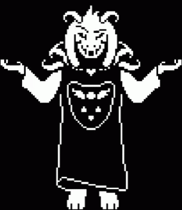

Il est possible dans undertale d'obtenir plussieurs fins grace a vos différentes action.
Fins
Neutre
La Route Neutre est l'une des trois principales routes dans Undertale. Sur cette route, le boss final est Photoshop Flowey. On obtient cette route lorsque que l'on joue pour la premiere fois au jeu ou lorsque vous tuez des monstres. Il faut ainsi qu'au moins un monstre ait été tué ou que tout les monstres aient été épargnés.
Pacifiste
Sur la Route Vrai Pacifiste, le protagoniste doit finir l'une des Routes Neutres afin de débloquer la quête menant à la vraie fin pacifiste.Cette fin peut être considérée comme étant la "vraie fin" d'Undertale, de par sa conclusion heureuse et les crédits complets. Pour obtenir cette route il faut épargner tout les monstres que l'on croise et lier une amitié avec les personnages principaux.
Génocide
Dans cette route, en commençant par les Ruines, le protagoniste doit intentionnellement déclencher les combats avec les monstres et les tuer jusqu'à ne plus en rencontrer. cette route est la plus compliquée du aux deux boss que l'on vas devoirs affronter, Undyne l'immortelle et Sans .N'oubliez pas que tout des conséquences alors réflechissez a deux fois avant de vous lancer dans cette route ;) .